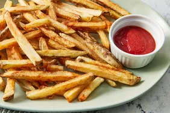

French Fries

french fries served with ketchup
Ingredients
Procedure
- Chop potatoes long and with desired thickness
- Destarch by pouring ice cold water let them rest in the cold water for fifteen minutes
- remove the potato juliens and dry them
- Deep fry the juliens until cooked
- Drain excess oil and double fry until crispy
- Season with salt and serve with dips